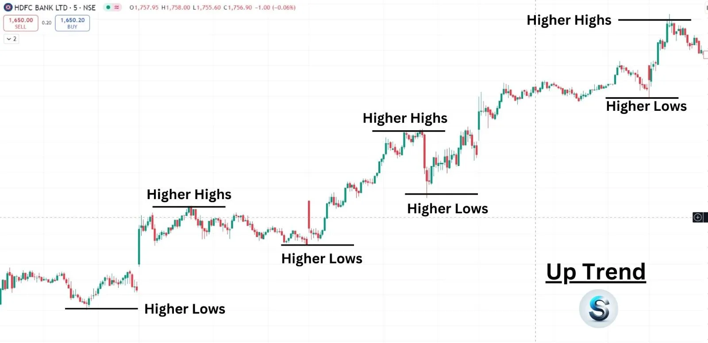
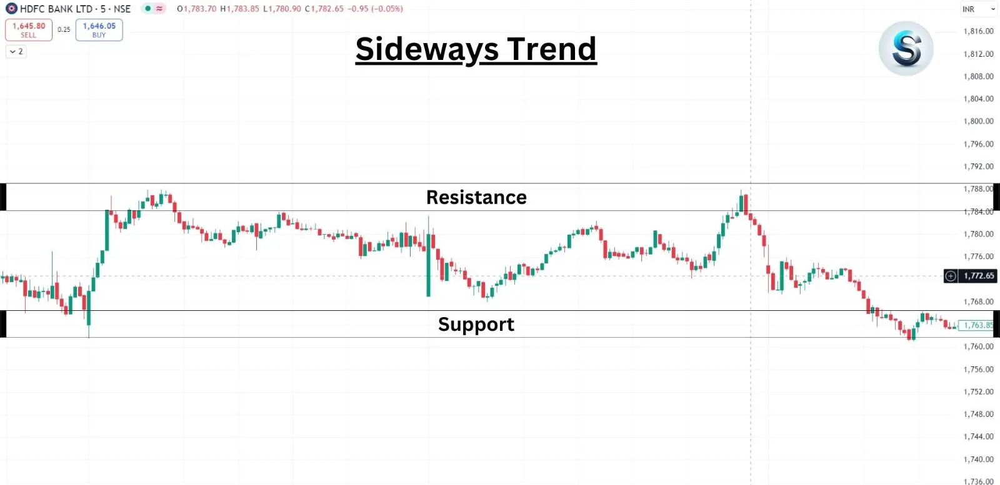
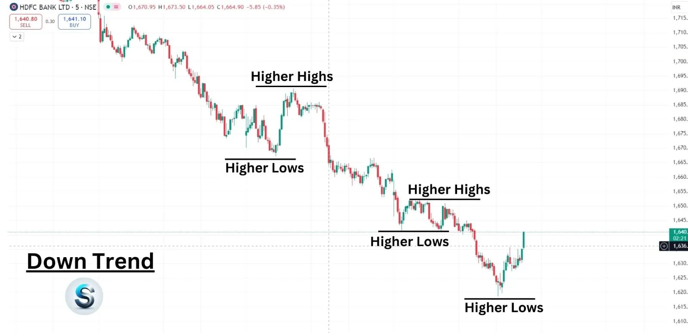
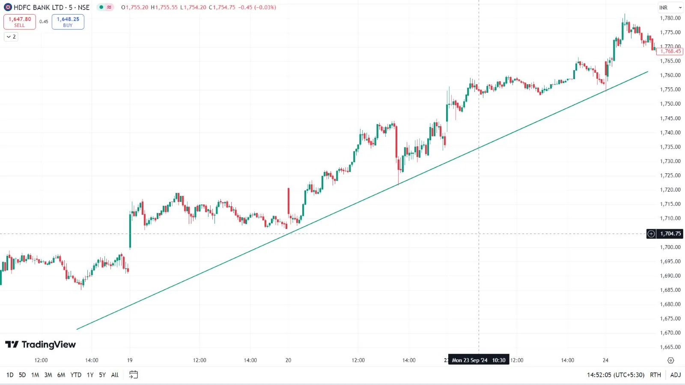

Table of Content
- Uptrend
- Characteristics of Uptrend
- Example of Uptrend
- Why Uptrends Happen
- Sideways Trend
- Characteristics of Sideways Trend
- Example of Sideways Trend
- Why Sideways Trends Happen
- Downtrend
- Characteristics of Downtrend
- Example of Downtrend
- Why Downtrends Happen
- How to Market Trends Analyse
- Conclusion
- Frequently Asked Questions
Types of Market Trends Analysis : Uptrend, Downtrend and Sideways Trends
When we look at the stock market or any financial market, you will notice that prices don’t just stay the same. They move up and down and understanding these movements is really important for anyone who wants to invest or trade. The patterns that prices follow are called trends. There is main three types of market trends analysis of market trends: uptrend, sideways and downtrend trend.
1. Uptrend

when the price of a stock is constantly growing over time that is called up trend. This is mainly shown by a sequence of higher highs price points and higher lows price points. In simple words, the price keeps going up.
Characteristics of Uptrend
i) Higher Highs
Each top or highest point, is higher than the one before it. For example, if a stock or indices goes from 1000 to 1200 and then to 1400, it’s making higher highs.
ii) Higher Lows
Each low price is also higher than the previous low price. So, if the stock drops to 900, then 1100 and then 1200, those are higher lows.
iii) Positive Sentiment
Investors are generally feeling good about the asset, which leads them to buy more. When people think, an asset will keep going up, they are more likely to invest in it.
Uptrend analysis example
Let’s say you are watching a banking company’s stock. Last month, it was priced at 500. Over the next few weeks, it increases to 550, then 600, and finally 650. This is a clear uptrend.
Many investors are excited about the company’s growth, possibly due to a new product that is getting a lot of attention.
Why Uptrends Happen
Uptrends often happen when there’s good news about a company or the economy. For instance, if a company releases a good new gadget, people might believe its sales will soar, then the stock price up. Economic growth, low unemployment rates and strong consumer spending can also contribute to uptrends across various stocks.
2. Sideways Trend

A sideways trend happens when the price moves within a Specific range. In this time, there is no clear upside or downside movement stock price. The price tends to go up and down without making significant progress in either direction.
Characteristics of Sideways Trend
i) Horizontal Movement
The price fluctuates but stays between certain levels, showing no clear trend.
ii) Support and Resistance Levels
In a sideways market, there are price points where the asset stops falling (support) and where it trends to stop rising (resistance). For example, if any stock or indices bounces between 600 and 650 for a few weeks, those are your support and resistance levels.
iii) Indecisive Market
Investors or traders are uncertain about the future, which leads to mixed buying and selling activity. People might be waiting for new information to decide their next move.
Sideways Trend analysis example
Example a stock that is priced at 50, and over several weeks it moves between 480 and 520. It doesn’t break through either level significantly. This situation indicates a sideways trend. Investors or traders might be unsure about the company’s future, leading to a lack of strong buying or selling.
Why Sideways Trends Happen
Sideways trends often happen when there’s no major news affecting the market. Investors or traders might be waiting for earnings reports, economic data or other events that could impact prices. Because of this uncertainty, they hesitate to make big moves in either direction.
3. Downtrend

A downtrend happens when the price of an asset is falling constantly over time. In this case, we will see lower highs and lower lows.
Characteristics of Downtrend
i) Lower Highs
Each highest in the price point is lower than the last one price point. If a stock rises to 700 and then only goes up to 650 before falling again, it shows lower highs.
ii) Lower Lows
Each low-price points are also lower than the previous low-price points. So, if the stock drops to 622, then to 565, and then to 522, those are lower lows.
iii) Negative Sentiment
Investors or traders might feel worried about the asset, which leads to more selling. If people believe prices will keep falling, they may rush to sell their shares.
DownTrend analysis example
Imagine Last month, any stock was priced at 800. Over the next few weeks, it falls to 745, then to 721, and finally to 680. This downward movement indicates a downtrend. Investors and traders may be concerned about declining sales and bad earnings reports, leading them to sell their shares.
Why Downtrends Happen
Downtrends can happen due to negative news about a company, such as unacceptable earnings or a product recall. Additionally, overall economic problems like high unemployment rates and poor earnings reports or product failures, can also lead to downtrends.
When investors or traders see negative trends in the economy, they may panic and start selling, which pushes prices down even more.
How to Market Trends Analyse
To Market Trends Analysis, investors often use various tools and techniques.
i) Trend Lines

By drawing lines that connect the highs or lows of price movements, investors or traders can visually identify the direction of the trend. An upward line indicates an uptrend, while a downward line indicates a downtrend.
ii) Charts
Different types of charts like candlestick charts, line charts, Heikin Ashi and bar charts etc, visually represent price movements. These help traders and investors fast identify market trends over time.
iii) Moving Averages
This is a common market trends analysis technical indicator that out indices or stock price data to help identify the direction of a trend. For example, a 50-day moving average shows the average price over the last 50 days, making it easier to see if the trend is upward or downward.
Conclusion
In summary, understanding the three types of market trends uptrend, downtrend and sideways is important for making informed investment or trading decisions. Each trend provides insights into the market's behaviours
i) In an uptrend, prices are growing, and investors and traders are positive.
ii) In a downtrend, prices are falling, and investors and traders may be fearful.
iii) In a sideways trend, prices are stable and easy to find support and resistance.
By identifying these trends, investors and traders can make better choices about when to buy or sell stocks. Always remember, while trends can provide valuable information, the market can be unpredictable. So, full research and analysis are important before making any investment decisions and also check our Disclaimer page.
Frequently Asked Questions(FAQs)
Tell me more about bear markets.
A bear market occurs when the price of stocks or indices falls by 10% or more. when people are worried about the economy and aren't confident in investments.
What are the different types of trend analysis?
There are three main types of trend analysis: up trends- where prices go up, down trends- where prices go down, and sideways trends- where prices stay about the same.
How many types of market trends are there?
There are three types of trend i) Up trends ii) down trends iii) sideway trends